Dylan's boss cinematics Green vs. Tan · the twelve first-open films, live at client v27.41 · gathered 10/30/2026 as the baseline for the video ads
Each film was written by Dylan through the jumpr guest link and built from the game's own characters and paintings as an SVG timeline, so any beat can be re-rendered at any size for an ad. Press play on any film; the frames, the cast and Dylan's own words sit beside it. The written brief is at the foot of the page.
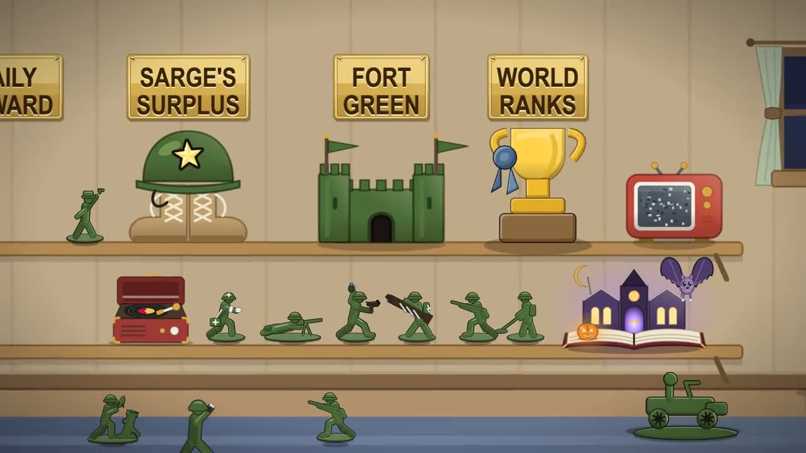
1THE DUELNemesis, the red saber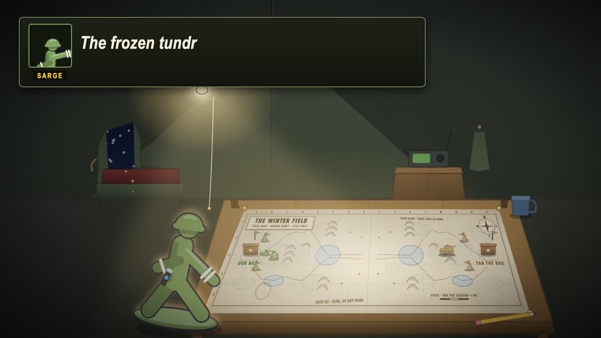
2SARGE'S PLAN · THE WINTER FIELDthe Frozen Tundra (a PvP night, not a boss)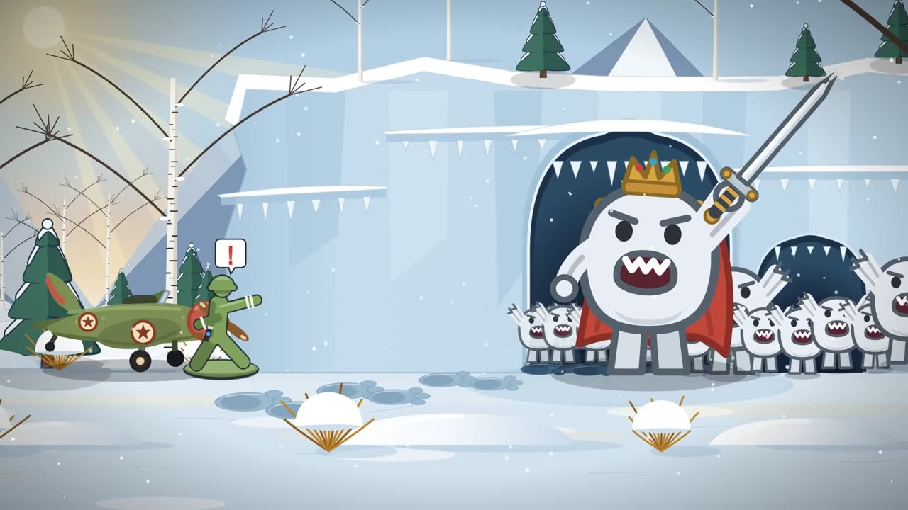
3MAYDAY ON THE WINTER FIELDKing Yeti and the yetis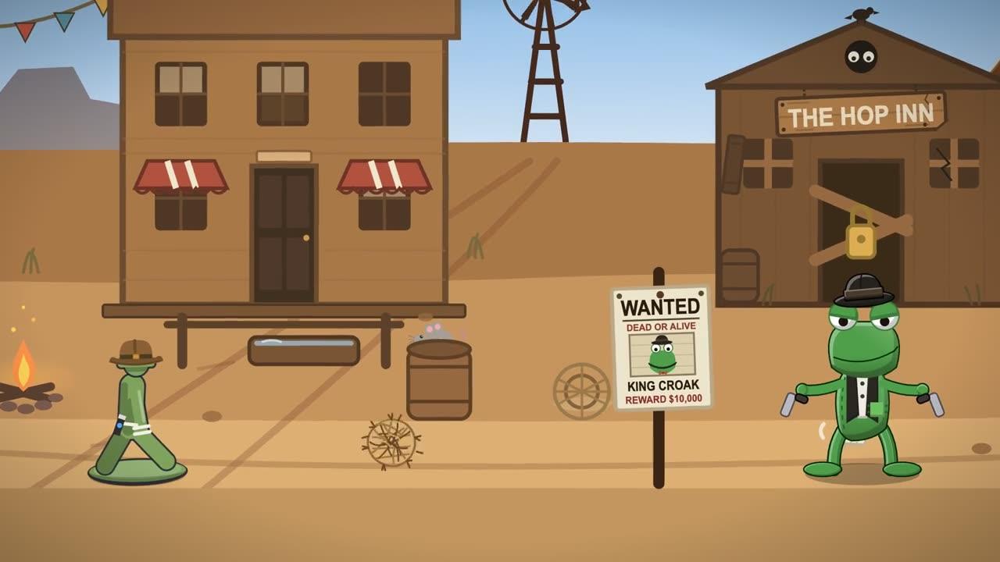
4THE DRAWKing Croak, Fuzzie, Outlaw Town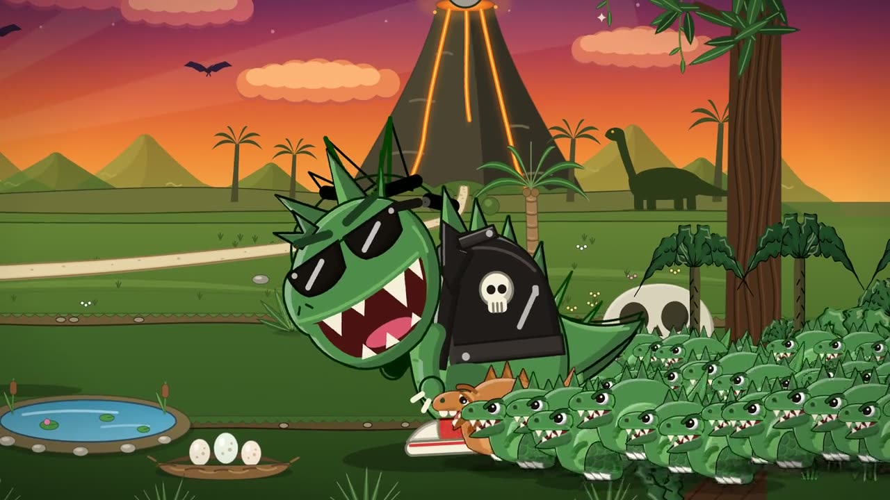
5DINO-MIGHTKing Rex, the little dinos, the Flamethrower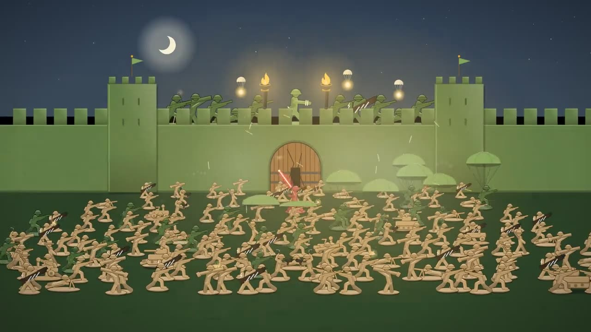
6THE LONG NIGHTNemesis's army at Fort Green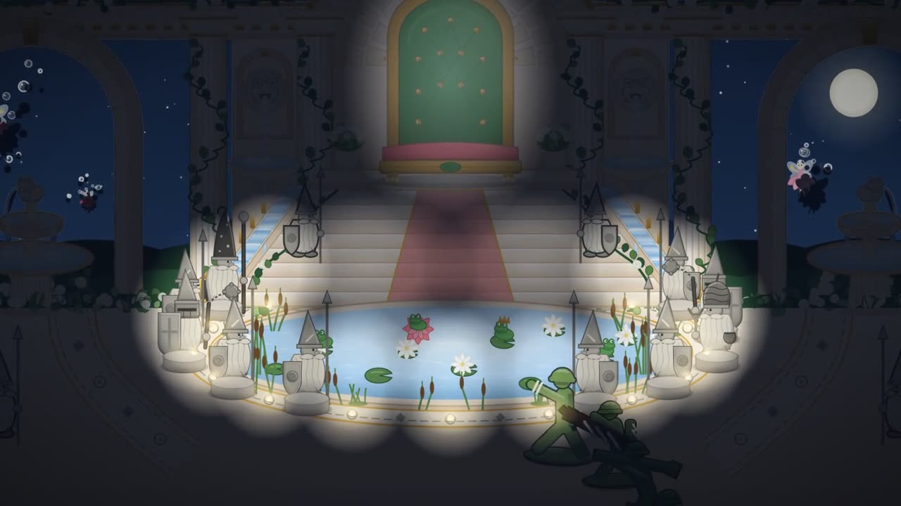
7HOP, SKIP AND A THUMPPrincess Croak and the gnome statues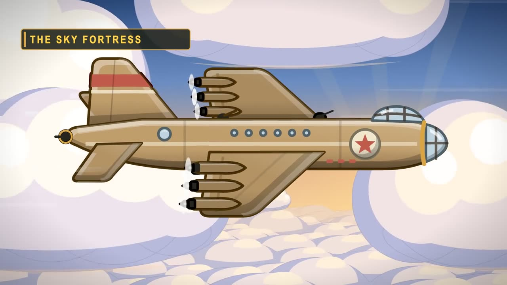
8FORTRESS, IN FLIGHTThe Sky Fortress, the Tan Air Corps, the Red Tail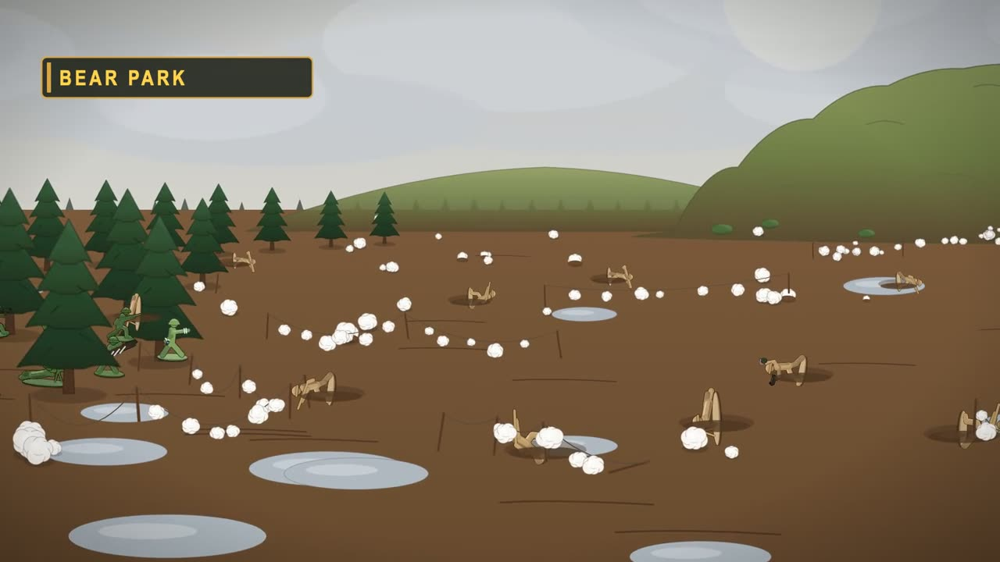
9THE EMPEROR'S NEW FOESEmperor Bear and his cavalry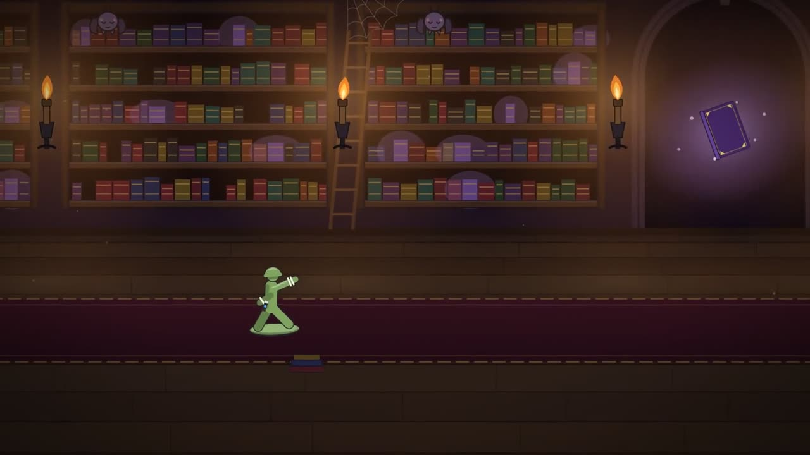
10STRANGE MAGICthe Strange Book's ballroom monsters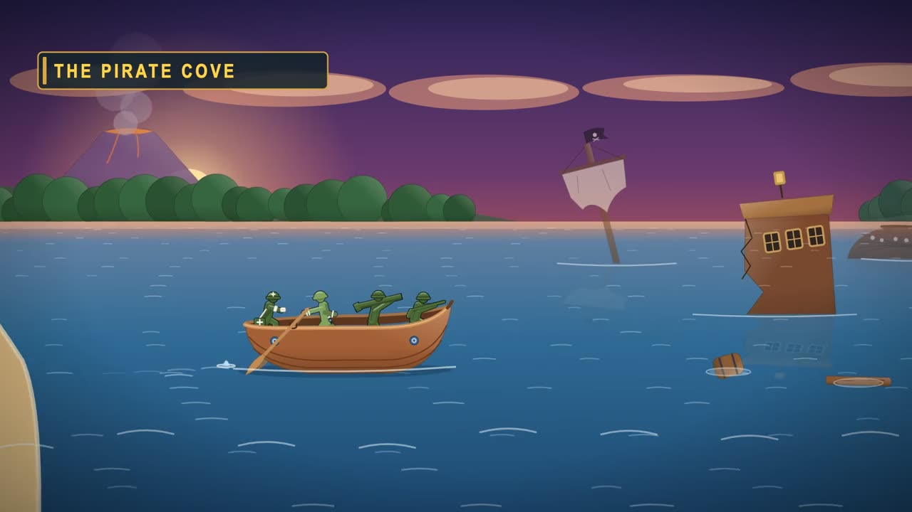
11PIRATES COVE: THE SUNKEN SHIPKing Kraken, Captain Cutlass and the pirates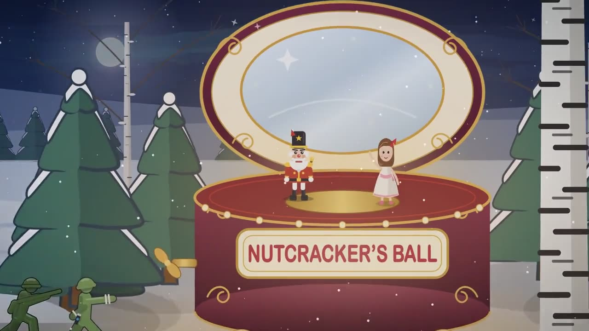
12SARGE'S LAST DANCEThe Mouse King, Clara and the NutcrackerTHE DUEL
Dylan's ask
From Dylan (jumpr guest link), sent 2026-10-16 00:59:25 UTC (10/15 20:59 EDT), verbatim: "Can you make a thirty second cinematic cut scene of sarge facing off in a saber duel versus nemesis. I would like the art style to be in line with the game and for some dramatic yet slapstick style dialogue between the two characters please? Thank you. Send me a design pass of the footage when it's complete. Thank you!"
download the film · on playgvt.net · on drbango.com · contact sheet
Every five seconds
The cast on the character sheet


Not on the character sheet: Nemesis as himself.
His replies to the cuts
- FEEDBACK · 22:19 EDT 10/16 · Dylan's reply (WhatsApp 3A802AA9CFBB274C4F2C, a swipe-reply to the film 3EB05F1EE8814BA0A66FF2), verbatim: "Go live!" Round 2 has been live since 22:13 (v24.39 2367a6e8e): nothing to build; the answer confirms it with the served proof and tells him the once-per-device seat (SND2-F1: a phone that already played round 1 does not replay it; his word makes it play once more for everyone).
- FEEDBACK · 21:2x EDT 10/16 · ROUND 2 CHECKPOINT (Dylan's reply 21:14:18, WhatsApp 3A0DA3EC0FF2BA406EA9, a swipe-reply to the live notice 3EB0A61BD65DC6B4214DCD), verbatim: "Can we tighten this one up a bit as well? I think we need a little more passion behind it but I do like the goofy undertone it has. Can we play with some of the dialogue and maybe get more of the layout of HQ involved in the background? Maybe we have some troops and vehicles moving about in the background? Let's get creative with this one. Thank you!" READ: 'tighten up' = his word for the polish he asked of the MAYDAY film at 21:11 ("make the graphics scale more like Dino Might 3 did"): the figures big in frame over the game's full-colour painting, never a dark rug. PLAN (round 2, built live by the switch like round 1, replacing snd-duel.mp4/.jpg + the GVT_CV bump, the seat and code unchanged): the HQ room in full colour as the game paints it (the shelves and their pieces, the window, the bed, the toy chest, the campaign box, the raid flags, the battle map) split into depth layers; the squad's own sprites (sprURI) and vehicles (jeep, tank, the bomber) moving about behind the duel; Nemesis's own bed NEM_M4A ('Epic Boss Battle', 175 BPM) under the fight, the HQ's theme before it; the cuts on the beat; a new, hotter script with the goofy undertone kept; the sound rendered offline (CARD-DMT's sfxrec.mjs +
SARGE'S PLAN · THE WINTER FIELD
Dylan's ask
From Dylan (jumpr guest link), sent 2026-10-16 02:00:29 UTC (10/15 22:00 EDT), verbatim: "Thirty second cutscene of Sarge at a table, inside of his tent with a battlefield style map of the frozen tundra in front of him. He moves tiny green army men figures around as he has an inner monologue about how he can take the tan toy box swiftly. There is a single lamp on behind him, illuminating him and the table."
download the film · on playgvt.net · on drbango.com · contact sheet
Every five seconds
The cast on the character sheet


MAYDAY ON THE WINTER FIELD
Dylan's ask
From Dylan (jumpr guest link), sent 2026-10-16 11:46:44 UTC (07:46 EDT), verbatim: "Can we make a sixty second cutscene scene of the following: Sarge on his plane, flying over a frozen white plain (The Winter Field). His propeller sputters, then stops. "Mayday, this is sarge, I'm going down!" Sarge makes a slightly bump, but safe landing on the ice. The plane pulls in just in front of some large ice caves. Sarge looks up and sees huge footprints…they are the prints of king Yeti. Suddenly standing in front of him is King Yeti, with his minions behind him. King Yeti lets out a roar! Sarge stares him down, then calls over his radio "I'm going to need some backup…stay!" Sarge puts his radio down and starts to charge king yeti. As he does, he pulls out his saber and lunges to a clash of saber to king yetis sword! End scene."
download the film · on playgvt.net · on drbango.com · contact sheet
Every five seconds
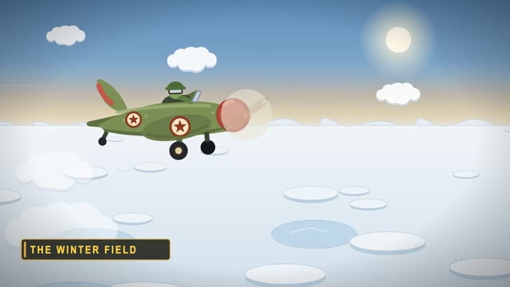
0s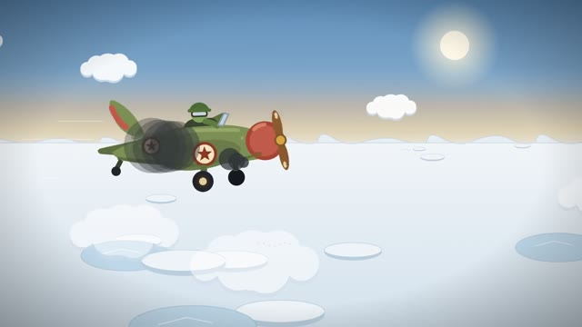
5s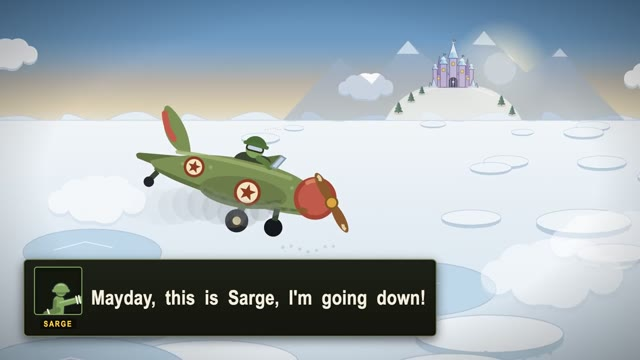
10s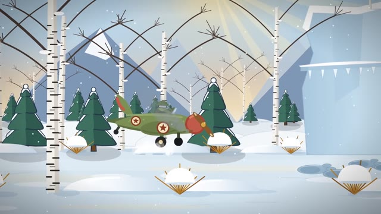
15s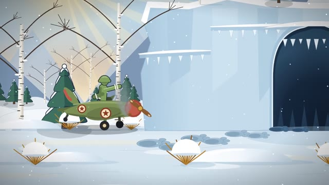
20s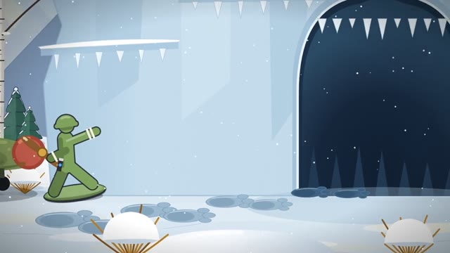
25s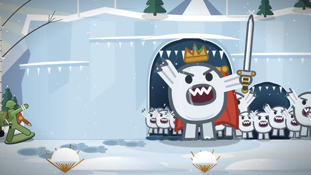
30s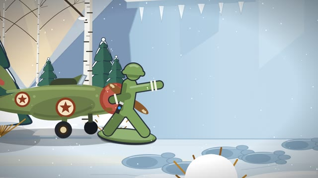
35s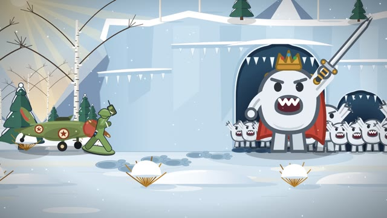
40s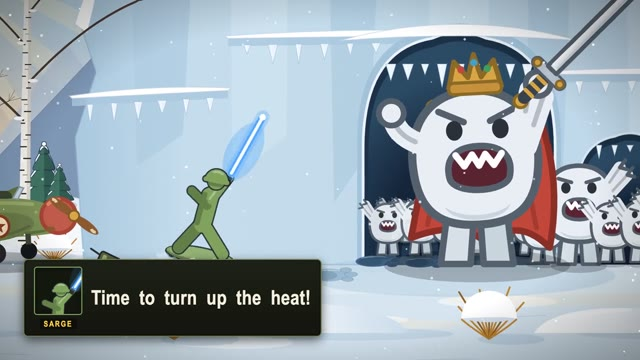
45s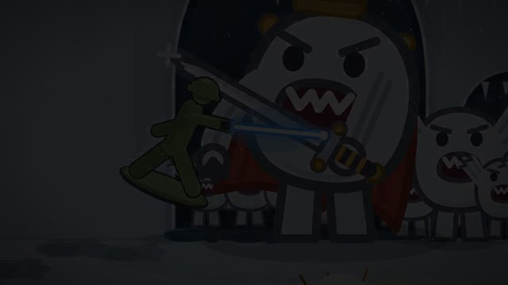
50s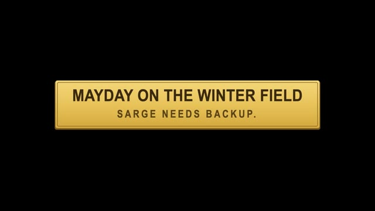
55sThe cast on the character sheet

His replies to the cuts
- **FEEDBACK · 21:1x EDT · ROUND 4 FROM DYLAN (WhatsApp 3A8DE223E2EFAB7F451A, 21:11:36 EDT, a swipe-reply to the round-3 film), verbatim: "Can we tighten this up a little bit? I’d like to make the graphics scale more like Dino Might 3 did with maybe some birch trees and then I’d like to take out the palace sitting atop the mountain. We can have the place shot through the clouds stay but refine the art work and make it look more similar to the palace from Yeti Park. Let’s change sarges dialogue line from “Stay” and “Charge” to just, “Time to turn up the heat!” Please. Thank you! Let’s see a design pass on this." A DESIGN PASS (his words; CARD-DMT's rounds 2 and 3 set the pattern under the same switch): the recut is BUILT + SENT, nothing lands until his go; the live client keeps round 3 (v24.07). CP4 (the checkpoint before the build, the dying-session law): budget session 9 % · fable-weekly 26 % · OK; HEAD aaa56f03f (client v24.36); the board 21:12: J2 (CARD-DMT, this account) landing its round 3 (dmt-dinomight.* + sec:CARD-DMT), M2325/M2326 on Maker 1; my claim = design/mayday-winter-field-1016#* alone (a design pass; the media + the screen are claimed at his go). THE READ: Dino-Might's frames sit INSIDE the park's own painting (Laura's Dino Park: the jungle in bands behind, beside and in front of the figures, trees past the top of the frame, Sarge about 30 % of the frame's heig
- FEEDBACK · 10:0x EDT · ROUND 3 FROM DYLAN (WhatsApp 3AE8DC63C1B0399ED8A8, 10:01:04 EDT, a swipe-reply to the round-2 page), verbatim: "Very cool! Let's maybe clean up the audio backtrack. Slightly too much clicking noise. Thank you!" THE PLAN (sound only; the picture stands): (1) the engine loop replayed the prop row's catch puff every second = a tick train: the loop now skips the catch (a start offset) and the rows crossfade; (2) every cue gets a short fade in and a fade out at its own tail (the rows the recorder cut at 2.5 s ended on a click: prop, voom, ignite, dive); (3) the charge's wooden thock steps every 0.22 s and the walk's thocks become the game's march row and soft thumps; (4) the roar's rumbles thinned; the quiet ice ticks dropped; (5) the Winter Field bed looped through a crossfaded seam instead of the container loop. cues.json is rebuilt from the timeline without a render (film.mjs cues), then make.sh post, the hook as round 2 (GVT_CV alone). CLAIMED J1 gvt again.
- FEEDBACK · 09:1x EDT · ROUND 2 FROM DYLAN (WhatsApp 3A9A8171082586628F90, 09:05:30 EDT, a swipe-reply to the film), verbatim: "Very cool! Can we have the Winter Field music play in the background and can the footprints be flush to the ground leading to the cave, for proper perspective please. Can we also double the initial distance between sarge and King Yeti when they first meet? I'd like to have roughly 25 minions behind King Yeti as well. Thank you!" THE PLAN: (1) the game's own Winter Field bed (the 'snow' row, SNOW_M4A) pulled from the client and laid under the whole film, soft, faded in and out; (2) the prints drawn lying on the ice: squashed to the ground plane, a receding trail from his feet to the mouth, nearer bigger and lower, the toes pointing into the cave; (3) the cave and the king shifted 700 px east (KX0 3300 → 3910: the gap at the meeting 610 → 1220; the camera opened for the wides; the charge a real run); (4) a crowd of 25 yetis behind him in three rows (nine inside the mouth, eight across its front, eight along the cliff's foot), bouncing in the roar, scattering at the charge. CLAIMED J1 gvt again (the same areas). The build = a new render + the same hook: applyMDY.py learns round 2 (the sec present → only GVT_CV moves, the media changes); the NEG proof is skipped when the base carries the sec. Budget: session 7 %, weekly 4 %.
THE DRAW
Dylan's ask
From Dylan (jumpr guest link), sent 2026-10-16 13:14:35 UTC (09:14 EDT), verbatim: "Let's do a 60 second cut scene. Old western music playing in the background. Sarge walking down the street in Outlaw Town. Fuzzies Milkshake bar in the background as sarge strolls down the street with a cowboy hat on. "It's mighty quiet here…" says sarge. Fuzzie in the background is seen looking away from sarge at something unknown to the viewer yet. Fuzzy jumps and then scampers inside of his shop. Cut to King Croak at the other end of the street. "Ribbit" says croak. Cut to sarge "Your time to terrorize these parts is over croak!" Says sarge. "Draw!" Says sarge. Both Sarge and King Croak quickly set up Easels and paint one another. They show each other their drawings. "Not Bad" says sarge. "Ribbit" says King Croak. End scene. Title the scene "The Draw""
download the film · on playgvt.net · on drbango.com · contact sheet
Every five seconds
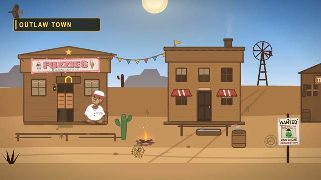
0s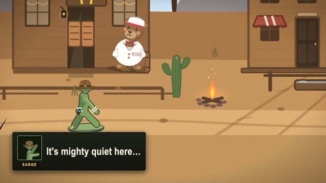
5s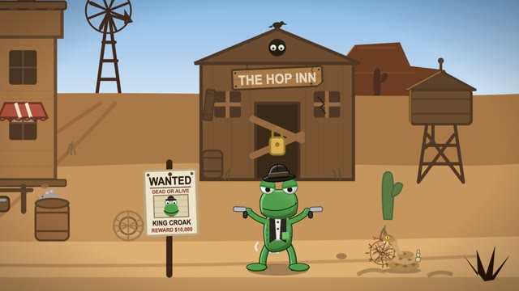
10s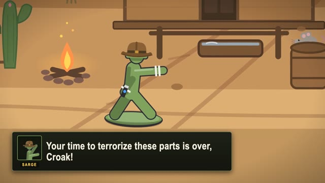
15s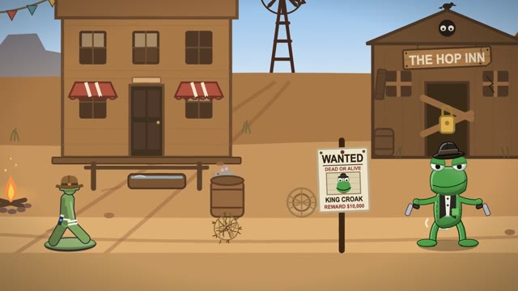
20s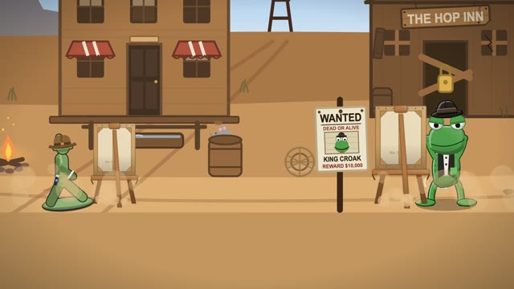
25s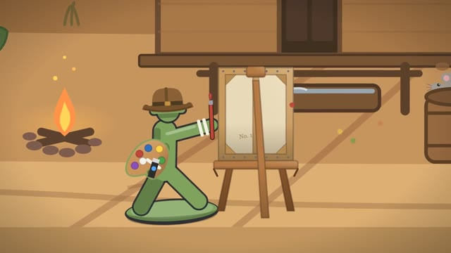
30s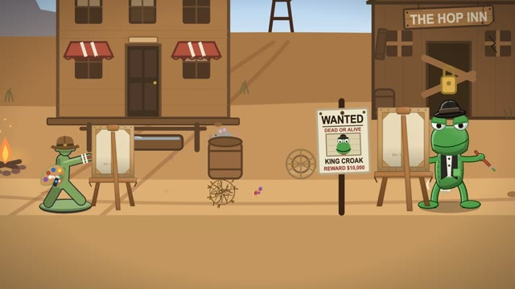
35s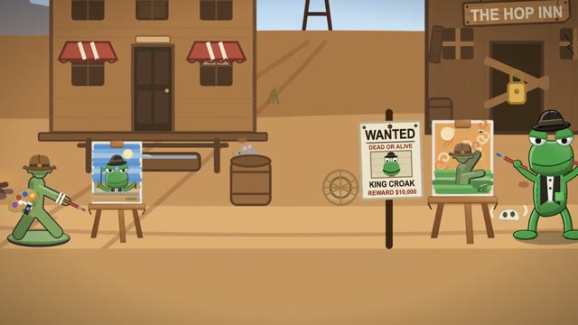
40s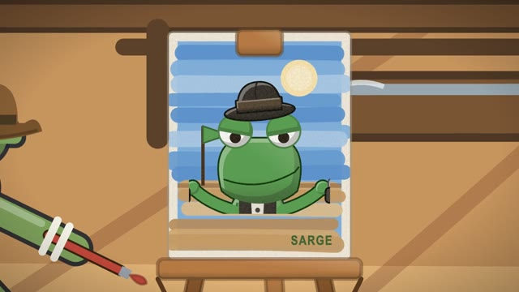
45s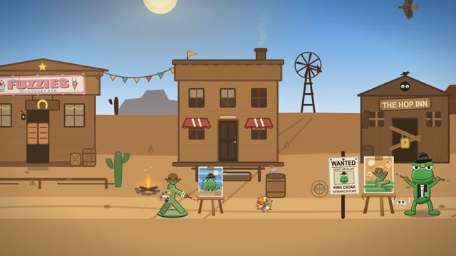
50s55sThe cast on the character sheet

Not on the character sheet: Fuzzie the soda jerk.
His replies to the cuts
- FEEDBACK · 10:2x EDT · THE SOUND CLEANED BEFORE IT SHIPPED. While this card built, Dylan answered the Mayday film (CARD-MDY round 3, his WhatsApp 10:01, verbatim: "Let's maybe clean up the audio backtrack. Slightly too much clicking noise."). Read against that, the first mix of THE DRAW carried the same kind of clicks:
whwindis the wind-up toy's ratchet (three clicks), not wind;drumis a seven-strike snare;boingopens on three crank clicks;zoomis four square clicks; and two trains of 170 brush swishes each opened on a hard noise edge. Re-cut with soft rows only (windfor the wind, softthumps for the steps and the heartbeat, sparse lowswishes,bounce/soclandfor the hops,wwhooshfor the whip and the turn) and every cue faded in 12 ms and out 80 ms (MDY round 3's cure): 345 cues → 221; a click proxy (onsets of the >3 kHz band) 103 → 70, of which 33 are the harmonica's own note attacks (the town's music) and the rest single deliberate hits, no trains.
DINO-MIGHT
Dylan's ask
From Dylan (jumpr guest link), sent 2026-10-16 18:53:59 UTC (14:53 EDT), verbatim: "60 second cut scene. Sarge is driving through the jungle in his jeep. Alongside him is the flamethrower unit. They make there way through the dense jungle while suddenly they hear a loud thump! They both look at each other. Sarge and the flamethrower get out of the jeep and walk around the jungle. They step out into a clearing while the Dino park music begins to play. They hear another thump and pause. Suddenly, king Rex bursts through the other end of the clearing. The flamethrower kicks on his torch to let out a small burst of flames. Cut to king Rex, who unleashes a huge burst of flames that slightly singe the flamethrower. Flamethrower stands there in dibelief. Sarge pull out his saber and says "get behind me". Many thumps are heard now as fifty little dinosaurs pop out behind king Rex. At the next instance, various members of sarges squad come into focus in the same clearing. Both forces stare at one another and then a roar is heard from king Rex. Sarge cries aloud "Charge!" And all forces head towards one another. End scene. Title this, "Dino-Might""
download the film · on playgvt.net · on drbango.com · contact sheet
Every five seconds
The cast on the character sheet


His replies to the cuts
- FEEDBACK · 16:2x EDT · ROUND 2, A DESIGN PASS ON DYLAN'S REPLY (his WhatsApp 16:22:20 EDT, 3A59748821FBF540B5F7, a swipe-reply to the film, verbatim: "Pretty cool! Let's make sarge and the flamethrower look more like they are seated while driving. Can we also clean up the ghost shadowing around king Rex? I'd like the background to be more congruent in Dino park. It's has some odd cut-offs presently. Can we maybe make the little dinosaurs eggs on the ground that were already there and then they hatch open? Let's also have sarges other units walk out of the jungle instead of just pop up out of thin air please. Let's run a design pass on this and see how it looks! Thank you!"). Read as five changes to the film and ONE instruction about the landing: "run a design pass on this and see how it looks" = the recut is built and SENT for Dylan's look, and NOT pushed live until their go (a member's design pass is what they ask for in so many words, Wyatt 10/14; the live client keeps v24.31's film meanwhile). + Dylan's second reply 16:27:54 EDT (3A8906D52978EF636E24), verbatim: "Let's also have the flamethrower just poof out a small smoke batch after king Rex' flames." = (6) a small batch of smoke poofs out of the flamethrower right after the king's flame (a comic cough of grey puffs, then the thin wisps). The five: (1) the riders seated in the jeep (lower in the body, a seat back
THE LONG NIGHT
Dylan's ask
From Dylan (jumpr guest link), sent 2026-10-17 01:32:04 UTC (10/16 21:32 EDT), verbatim: "Can we run a design pass on a 60 second cinematic in which we introduce survival mode. I am thinking we have a wide frame rear view of Sarge on the walkway of Fort Green looking out into a dark night sky while torches are beside him. Troops gathering up along the causeways. In the distance, a red saber appears. Flares fire from inside the fort to illuminate the exterior and we see Nemesis leading an attack with a massive force on fort green. As troops are clashing at the walls, green paratroopers are dropped from planes above behind enemy lines. Cut to sarge still atop the fort and he says as his helmet tilts slightly…”This is gonna be a long night…”"
download the film · on playgvt.net · on drbango.com · contact sheet
Every five seconds
The cast on the character sheet


Not on the character sheet: Nemesis as himself.
His replies to the cuts
- FEEDBACK · 10/17 20:4x EDT · ROUND 4 FROM DYLAN (WhatsApp 20:38:23 EDT, 3A5C6CB6D839D20DAA89, a swipe-reply to the round-3 film 3EB0744A6677ACB2602B3C), verbatim: "Gret job on the centering! Can we maybe remove the click sounds in the background and replace the audio with dramatic drum beats?" A concrete edit: BUILT, proved, LANDED, output 4 to Dylan. THE READ (measured, kit/sfx rows by length and brightness): the click-like rows are the torches' crackle pdrRat (72 cues of a 32 ms 3.6 kHz tick under the watch and the close-up, and the flares' sizzle), the men's rifle clacks and the chutes' clacks (34, 74 ms, 3.2 kHz), the engines' crank (10), mg and aagun (each renders as one 30 to 70 ms click), pew, blip, rattle, the two creaks (a creak is a train of clicks), and the far musket trains under the sky and the close-up. THE DRUMS: the game's own DRUM CADENCE (DRC_M4A: the United States Air Force Band's live drum line, public domain, 112.8 beats a minute, 81 % of its energy under 150 Hz; one of the three drum themes Wyatt approved 9/27 for Fort Green's record player, and CARD-DCO's drums under the tutorial's opening), the heaviest of the three, as the film's score from the watch to the line in place of NEMESIS's bed, a bar line on the reveal cut; Wyatt 9/27: "The drums first are strong, really strong, because they don't take too much attention." The picture unchanged (a sound
- FEEDBACK · 10/17 20:1x EDT · ROUND 3 FROM DYLAN (WhatsApp 20:09:59 EDT, 3A13761EF3E0E81FF96E, a swipe-reply to the round-2 film 3EB0E162B8AD6D7E184C9B), verbatim: "Great! Can we just center the torches and sarge when we initially see him please? They seem to be slightly misaligned. Thank you!" A concrete edit: BUILT, proved, LANDED, output 3 to Dylan. THE READ: "when we initially see him" = the opening rear view on the walkway (world A, 0 to 23 s): the fort there is symmetric about the frame's centre x 960 (the towers, the causeways' tops at 430 and 1490, the road out of the gate) while Sarge stood at x 1125 between torches at 905 and 1340, so the group sat about 160 px right of centre. THE PLAN: Sarge to x 960 (above the gate, as in world B), the torches symmetric at 742 and 1178, the sixteen men's posts re-spaced symmetric outside the torches, the push and the over-the-shoulder camera re-aimed so the red saber (Nemesis at 900, unmoved) still reads beyond his helmet; world B untouched. CP3:
fable-left --model claude-opus-5-5session 2 % · weekly-all 53 % · OK; HEAD 5e0003a35 (client v24.49 = round 2). - FEEDBACK · 10/17/2026 19:3x EDT · ROUND 2 FROM DYLAN (WhatsApp 19:30:49 EDT, 3ABF9CE0D7547D43C699, a swipe-reply to the look page's picture 3EB0049B492116DE87DAFB), verbatim: "Can we just change the text box for “This is gonna be a long night” to be centered above Sarges head please?" A concrete edit (no "design pass" words), so by the live switch it is BUILT, proved and LANDED, then output 2 goes to Dylan. CP2 (the checkpoint before the build): the session resumed on Opus 5.5 max by the relay's seat check (fable-left reads fable-weekly 100 % ⛔ STOP for Fable; measured the Opus way,
fable-left --model claude-opus-5-5: session 1 % · weekly-all 52 % · OK, so the 10/1 + 10/15 rules govern: an Opus session does the work). HEAD b2b5d00d9 (client v24.48; v24.42..v24.48 landed since this card, none on its areas); the sec CARD-LNG and the hsvGo door found once each in HEAD's blob. THE PLAN: kit/longnight.html's LINES row getsabove:trueand commHTML seats that window by the camera, its bottom-centre over Sarge's head in the close-up (the game's own comm window, unchanged otherwise); a full re-render (kit/make.sh), the review boards, then applyLNG.py's round-2+ path (GVT_CV alone moves in index.html; the film + poster at the root replaced), proofs, commit_client.sh client && deploy_lng.sh, Dylan's output 2 quoting their note. UNDO of round 2 = round 1's two root files back (`g
HOP, SKIP AND A THUMP
Dylan's ask
From Dylan (jumpr guest link), sent 2026-10-17 23:30:33 (the card's stamp), verbatim: "60 second cinematic for Princes Croaks palace entrance. Classical music playing softly. Sarge and his troops are walking around a luxurious pond in the center of the palace. The lights on the pond perimeter are on but the rest of the palace lights are off. Gnome statues stand in file around the perimeter of the pond. At the far end of the pond is Princess Croaks throne, except, these not in it. Suddenly, a long tongue comes out and snatches a rifleman. More cries for help as the tongue keeps grabbing sarges men and takes them into the darkness. Sarge and the remaining (let’s make it five) men finally reach the base of the throne. The pond lights go off for a second. Sarge says stay calmn in the darkness. The light come back on and Princess croak is seated on her throne. The gnome statues are statues no more! They surround sarge and his remaining troops. The ones the tongue took previously are tied up next to the Princess. She looks at sarge and says “My Father warned me of you…Sergeant.” Sarge retorts with, “It’s not easy being green, Princess. I think we can both agree on that. Do what you must, but know that I shall do the same.” The Princess smiles and says “I look forward to it…Gnomes, ATTACK!” A brief melee begins. end scene. Title this: “Hop, skip and a thump” Let’s run a design pass on this please. Thank you!"
download the film · on playgvt.net · on drbango.com · contact sheet
Every five seconds
The cast on the character sheet


His replies to the cuts
- FEEDBACK · 10/17/2026 21:3x EDT · DYLAN'S CLOSING WORD: ROUND 2 STANDS. Dylan by WhatsApp 21:32:53 EDT (3ACE0EC3F86C5863F5F0, a swipe-reply to the round-2 cut 3EB0CC6118553B93B3EEBE), verbatim: "No this is great as is, thank you!" = HST-R2-Q1 CLOSED (the line is "Father warned me of you…", no tail). Nothing built. The acknowledgement sent quoting it: 3EB0A69FB1A2C2542C9E1D (send.py's third message to Dylan: it carried the gratitude line; Discord 1561190571928715276); send/WHATSAPP-TEXT-r2-close.txt, send/SENT-r2-close.log. SERVED: playgvt serves v24.54 (9fd3bbee) by 21:3x; drbango.com still on its Pages build at 21:34 (served.log keeps logging). The card is DONE; a further word of Dylan's wakes this session the same way.
- FEEDBACK · 10/17/2026 21:1x EDT · ROUND 2 ON DYLAN'S WORD (the same session 9f57e501, J1 gvt, acct F Judy, Fable 5.1 max). Dylan by WhatsApp 21:16:16 EDT (3AA8880EBF8B0BD20FE4, a swipe-reply to the look page's picture 3EB0207267AF90EFF9F34F), verbatim: "Amazing! Let’s just change her first line to “Father warned me of you…”". THE CHANGE: PRINCESS CROAK's first line in the comm window (37.6 s) becomes "Father warned me of you…" word for word as they wrote it (the "My" and the "… Sergeant." tail gone; ⚑ HST-R2-Q1 below if they meant the tail to stay). The recut: kit/hopskip.html's LINES, kit/make.sh (the render, the mix, the encode, the boards, the look page), the media into build-hst/media, build_land.sh + proofs_hst.sh + write_msgs.py (the round-2+ path: the media and GVT_CV alone) + commit_client.sh client + deploy_hst.sh, then the film back to Dylan quoting their note.
FORTRESS, IN FLIGHT
Dylan's ask
From Dylan (jumpr guest link), sent 2026-10-17 23:43:55 UTC (19:43 EDT), verbatim: "60 second cinematic cut scene for the sky fortress. Main Home Screen music playing. Sarge is flying in his plane with a “V” shaped formation behind him of dogfighter units. Suddenly a cloud formation ahead of them begins to come into focus. As they get closer, it isn’t a cloud formation at all. It’s a giant plane, “The Sky Fortress”. Sarge calls for the squad over the radio “Defensive positions, we have tangos coming in from every direction!” We see numerous enemy dogfighters swarm sarges’ ranks and chaos begins! Sarge calls over the radio “Bring in the big boys!”. Suddenly Three Green Bomber units appear on the horizon flanked by numerous green dogfighters. “This should even the odds” says sarge. End scene. Let’s title this “Fortress, in flight”."
download the film · on playgvt.net · on drbango.com · contact sheet
Every five seconds
The cast on the character sheet


Not on the character sheet: the sky craft stand under the sheet's names BBCANNON · BBFIGHTER · BBV2.
THE EMPEROR'S NEW FOES
Dylan's ask
From Dylan (jumpr guest link), sent 2026-10-18 01:48:19 UTC = 10/17/2026 21:48:19 EDT (jumpr card 2338), verbatim: "60 second cinematic for the entry to Bear Park. It starts with Sarge and his platoon crossing along a muddy field on foot. All around them are little white cotton balls strung about the field, with tan soldiers laying down in the mud. One soldier asks sarge, “What is this stuff sarge, snowballs?” Sarge replies, “…worse”. Atop the hill in the distance, we see Emperor Bear atop his white horse, with his sword drawn. Sarge looks back at his men and says, “They may look cute, but those fluff balls are ruthless.” They all look back at the hilltop and now emperor bear is flanked by his entire cavalry force. Emperor bear shouts “En Avant” and the cavalry force begins to charge down the hill towards sarge and his men. Little white cotton cannon balls fly from behind the hill towards sarge as well. Sarge pulls out his radio and says “Bring in the rolling thunder!”. From behind sarges troops and out of a forest come a rush of green tank units to counter the oncoming cavalry charge. Sarge and his men plow ahead towards Emperor bear. Fade out as we continue to witness the impending clash. End scene. Let’s title this one “The Emperors New Foes”"
download the film · on playgvt.net · on drbango.com · contact sheet
Every five seconds
The cast on the character sheet


His replies to the cuts
- FEEDBACK · 10/18 10:55 EDT · ROUND 4 LIVE client v24.59 7bed901bf ON DYLAN'S GO (Dylan by WhatsApp 10:49:38 EDT 3A3EF62DF59F0A106404, a swipe-reply to the round-4 film, verbatim: "Great! Let’s go live with it for now. May revisit later for edits. Thank you so much!"): blob 963a01d5145b22a2088e0cea7f9512ae over v24.58 8975e2f1ae734830d7629f2ded069888 (HEAD 290eb7cc6; built and landed here, J1 gvt, acct F Judy, Fable 5.1 max, session 0651b22e, jumpr 2338): the base carried no CARD-ENF (the v24.56 undo), so round 1's path: applyENF.py H1 the sec CARD-ENF after CARD-FIF's end + H2 the openParkScene line + H3 GVT_CV 24.58 → 24.59 (+4739 bytes; zero words/CSS/server/sw.js/save keys); the film enf-newfoes.mp4 (round 4, 5,274,594 B, md5 56798b000367bf7db011d9c98509d6ae) + enf-newfoes.jpg (53,002 B, md5 25dd4f7d130cf5da25b8f07fabb0b316) at the root and both mirror roots in the same push. THE PROOFS 10:51-10:53 (build-enf/logs/proofs.log): Chrome build 29/0, WebKit build 28/0, NEG base red on A1 (no film on the base), parsecheck 0 (4 inline scripts); inside commit_client.sh: ODV-GATE SIZE 60,613,818 B (+0.00 MB; the ledger row J1 v24.59), FLOOR PASS (28 added lines, 0 guarded), LIGHT OK 963a01d5 → 64f90ead (77 clips moved). THE LANDING (the deploy lock 10:54 → 10:55): the board CLEAR, nothing landed since the base, no lock; the claim J1 on five areas (the sec :a, openParkScene, the
- FEEDBACK · 10/18 10:51 EDT · DYLAN'S GO: THE LANDING IN FLIGHT (the checkpoint) (Dylan by WhatsApp 10:49:38 EDT 3A3EF62DF59F0A106404, a swipe-reply to the round-4 film, verbatim: "Great! Let’s go live with it for now. May revisit later for edits. Thank you so much!"): round 4 goes LIVE by round 1's path: build_enf.sh --land (applyENF.py over HEAD's blob: the sec CARD-ENF + the openParkScene line + GVT_CV) → proofs_enf.sh → write_msgs.py (ROUND-NOTE.txt + ROUND-CHANGE.txt) → the board's claims → commit_client.sh client && deploy_enf.sh under the deploy lock (the two root files back from build-enf/media, the round-4 cut 56798b000367bf7db011d9c98509d6ae, to the root and both mirror roots in the same push) → land J1 → served.py once → Dylan told. Fable at the wake: F session 6 %, weekly 8 %.
- FEEDBACK · 10/18 10:0x EDT · ROUND 4 IN FLIGHT (the checkpoint) (Dylan by WhatsApp 09:57:09 EDT 3A43F920F16DEEC084E3, a swipe-reply to the round-3 film, verbatim: "This is cool! Can we have the opposing forces just charge towards each other?"): a design pass again, NOT live, zero game bytes. THE BUILD: THE CLASH as both lines charging AT each other: the cavalry pours down both faces of the hill into a line at its foot (the left wing on mirrored horses, down and to the right; the right wing down and to the left; a funnel toward the field's centre-right), forms up off camera during the radio, the tanks and the pass (44-53 s), and at 53.0 the bugle: the whole line charges across the flat at the green side (constant on the ground, growing in the picture) while the men break into a run behind the tanks, which keep their rush; the camera on the closing gap, pushing in; the first riders a horse's length from the lead tank's nose at the black (57.4). Then kit/make.sh (rm the two root copies), the look page (ROUND 4), the send to Dylan quoting 3A43F920F16DEEC084E3 WITH ABSOLUTE PATHS. Fable at the wake: F session 3 %, weekly 7 % (the wall-switch law carries the session on Opus if the seat walls).
- FEEDBACK · 10/18 08:1x EDT · ROUND 3 IN FLIGHT (the checkpoint) (Dylan by WhatsApp 08:07:28 EDT 3AB0D25AF202170D78BC, a swipe-reply to the round-2 film, verbatim: "This is better. Let’s still work on the physics of the horses. They seem to still be going somewhat sideways. Try to give them a frontward Gallup in 3D as opposed to a sideways 2D scope. Might help. Also, let’s randomize the cotton cannonballs that are on the battlefield already. They seem too organized at present. Thank you!"): a design pass again, NOT live, zero game bytes. THE BUILD: (1) THE HORSES as new art in a three-quarter FRONT view (horseFrontSVG: the chest toward the camera, the head and ears on, the forelegs reaching at the viewer, the barrel and rump receding behind, the rider on the withers), the charge's roads turned to run DOWN the hill's face at the camera and then across the flat toward the men, the gallop's speed in perspective (constant on the ground, so quicker as they near); the Emperor's rear in the same view; (2) THE COTTON on the field made irregular: the strings shorter and fewer in a straight line, their posts leaning at odd spacings, the balls at odd drops and sizes, the loose ones in clumps with stragglers and a few half sunk. Then kit/make.sh, the look page (ROUND 3), the send to Dylan quoting 3AB0D25AF202170D78BC. Fable at the wake: F session 0 %, weekly 6 % (the wall-switch law c
- FEEDBACK · 10/17 22:28 EDT · PULLED FROM LIVE ON DYLAN'S WORD: client v24.56 81740f0ad (UNDO) (Dylan by WhatsApp 22:23:04 EDT 3A2F9A5B67DDABCAF6A1, a swipe-reply to the film, verbatim: "Let’s not have this be live please. Let’s pull it. I think I’m going to alter most of this. The horses aren’t running straight, they go sideways. I think I want the emperor to have a more dramatic reveal. The hill needs to be larger with corresponding smaller hills adjacent to it. We need to work on this a bit before going live please. If you could run a design pass with the changes I just listed, that would be appreciated thank you so much!"): blob d4a9cad49fca090e250123b49381dd4b over v24.55 (HEAD d22f095f4): the sec CARD-ENF and the openParkScene line OUT (build-enf/undoENF.py; the round trip applyENF(undo) = HEAD's blob 512cb888 proved), GVT_CV 24.55 → 24.56, -4739 bytes = the v24.54 size again; enf-newfoes.mp4 + .jpg REMOVED from the root and both mirror roots in the same push (deploy_undo.sh); light 020503f98b64f36ef119e1203b83e257 pushed to DrBango and playgvt 6e44347a 22:28:55. Proofs: rig/undoCheck.mjs Chrome 5/0, WebKit 5/0 (no enfu name, no enf-newfoes string, the gate opens straight, nothing written to gvt_enf, THE ICE CASTLE's door untouched, zero errors), parsecheck 0, the gate FLOOR PASS, LIGHT OK. Board: claimed again (GO on base d22f095f4), CLEAR,
land J1 81740f0ad; the
STRANGE MAGIC
Dylan's ask
From Dylan (jumpr guest link), sent 2026-10-21 19:33:59 UTC = 10/21/2026 15:33:59 EDT (the plan file ~/jumpr/plans/20261021-170242-design-notes-from-dylan-jumpr.md), verbatim: "60 second cinematic cut scene for the “Strange Book” levels when you first open the tab. Open with sarge in a haunted library. Only lights are by torches on the walls. Spooky sounds are heard echoing gently. Sarge walks slowly through the library towards a floating purple book by the back wall. Sarge finally reaches it and the pages burst open! The book sucks sarge inside of it and he is suddenly transported to a spooky mansion ballroom with zombies and witches and vampires, bats, werewolves and wizards! They all start to dance around him to Halloween style music. Sarge reaches for his radio but it doesn’t work in this dimension. Cut back to the library where some of sarges units are following his trail. They come up to the book and call out out for him. Suddenly the book sucks them in as well! Next thing you know, sarge and his men form a circle and sarge says “Be prepared for whatever else comes at us squad!” The spooky characters stop dancing and converge on sarge and his men! End scene. Title this, “Strange Magic”."
download the film · on playgvt.net · on drbango.com · contact sheet
Every five seconds


The cast on the character sheet


Not on the character sheet: the vampires, werewolves and wizards are the film's own.
PIRATES COVE: THE SUNKEN SHIP
Dylan's ask
From Dylan (jumpr guest link), sent 2026-10-23 20:25:08 UTC = 16:25 EDT, verbatim: "Sixty second cut scene for Pirate Cove entry. Sarge has just defeated king Rex. Sarge and a few units notice a rowboat nearby and they row out into the cove. They are suddenly met with a thrashing kraken, with remnants of broken pirate ships around him. “King Kraken” arises from the water and says “This cove is forbidden for all ye’ trying to enter”. “You shall feel my wrath!”. Sarge rows frantically to the shore as the kraken thrashes around his rowboat. Sarge is met at the shore by an army of pirates. Sarge and his men look at the kraken, then the pirates and say “Shiver me’ timbers boys. We are in a bit of a pickle!” The pirates jeer at the notion and start upon sarge and his men. End scene. Title it, “Pirates Cove: The Sunken Ship”"
download the film · on playgvt.net · on drbango.com · contact sheet
Every five seconds


The cast on the character sheet


Not on the character sheet: King Kraken, Captain Cutlass, the crew, Pip, Polly.
SARGE'S LAST DANCE
Dylan's ask
From Dylan (jumpr guest link), sent 2026-10-24 11:15:09 UTC = 07:15 EDT (jumpr card 2669), verbatim: "Sixty second cut scene for entrance to the Nutcracker Ball. Sarge and his troops are walking through the winter field and they see a glimmering light in the distance. They follow the light and come across a large music box with a beautiful ballerina and nutcracker dancing on the surface. Clara (the ballerina) and the nutcracker, stop dancing and race to sarge. “We need your help sergeant!” Says Clara. “The mouse King has taken over our lands!” Cried the nutcracker. The nutcracker open the music box and they all jump in. Suddenly we are brought into the main hall with the christmas tree and they all get swarmed but the mouse Kings troops. The mouse king enters and says, “You don’t look like cheese, but I’m willing to make an exception…” End scene. Title it “Sarges Last Dance”" Dylan's reply on WhatsApp (2026-10-24 07:15:44 EDT, 3AC904C744FE2ACB67BB), verbatim: "Also, please have nutcracker music playing in the background up until the mouse king enters. Then let’s add dramatic theme music please. Thank you!"
download the film · on playgvt.net · on drbango.com · contact sheet

Every five seconds


The cast on the character sheet


Not on the character sheet: Clara, the Mouse King and his mice.
The brief
Gathered on Maker 1, 10/30/2026, from the Big Mac's HEAD (client v27.41) for the video-ads work: "starting with the ones we already have will be our baseline."
Open index.html in Chrome for the visual version of this file (every film plays in place, with its poster, its contact sheet, its cast and Dylan's words).
The twelve films
Every one was asked for by Dylan through the jumpr guest link (his script, verbatim, is in scripts/dylan-notes.md), built by a session from the game's own characters and paintings as an SVG timeline, and is LIVE on both mirrors with his go. Each plays once per device, full screen, the first time its door opens. 1280x720, 30 fps, H.264 + AAC.
| # | Film | Boss / world | Plays before | Length | Asked | Live |
|---|---|---|---|---|---|---|
| 1 | snd-duel.mp4 · THE DUEL | Nemesis (the red saber) | Nemesis's first card | 30 s | 10/15 | round 2, v24.39 |
| 2 | stm-tent.mp4 · SARGE'S PLAN, THE WINTER FIELD | the Frozen Tundra (a PvP night, not a boss) | the Tundra's JOIN | 30 s | 10/15 | v23.94 |
| 3 | mdy-mayday.mp4 · MAYDAY ON THE WINTER FIELD | King Yeti and the yetis | THE ICE CASTLE | 60 s | 10/16 | round 4, v24.38 |
| 4 | drw-thedraw.mp4 · THE DRAW | King Croak, Fuzzie, Outlaw Town | KING CROAK'S HIDEOUT | 60 s | 10/16 | v24.09 |
| 5 | dmt-dinomight.mp4 · DINO-MIGHT | King Rex, the little dinos, the Flamethrower | KING REX'S LAIR | 60 s | 10/16 | round 3, v24.37 |
| 6 | lng-longnight.mp4 · THE LONG NIGHT | Nemesis's army at Fort Green | SURVIVAL MODE | 60 s | 10/16 | round 4, v24.51 |
| 7 | hst-hopskip.mp4 · HOP, SKIP AND A THUMP | Princess Croak and the gnome statues | PRINCESS CROAK'S PALACE | 60 s | 10/17 | round 2, v24.54 |
| 8 | fif-fortressinflight.mp4 · FORTRESS, IN FLIGHT | The Sky Fortress, the Tan Air Corps, the Red Tail | THE SKY FORTRESS | 60 s | 10/17 | v24.53 |
| 9 | enf-newfoes.mp4 · THE EMPEROR'S NEW FOES | Emperor Bear and his cavalry | BEAR PARK | 60 s | 10/17 | round 4, v24.59 |
| 10 | smg-strangemagic.mp4 · STRANGE MAGIC | the Strange Book's ballroom monsters | THE HAUNTED LIBRARY | 60 s | 10/21 | round 2, v25.45 |
| 11 | tss-sunkenship.mp4 · PIRATES COVE: THE SUNKEN SHIP | King Kraken, Captain Cutlass and the pirates | THE SUNKEN SHIP | 60 s | 10/23 | round 2, v26.80 |
| 12 | ldn-lastdance.mp4 · SARGE'S LAST DANCE | The Mouse King, Clara and the Nutcracker | NUTCRACKER'S BALL | 60 s | 10/24 | round 2, v27.09 |
Live copies of every film: https://playgvt.net/<file> and https://drbango.com/gvt/<file> (the poster is the same name with .jpg).
Not Dylan's, kept in extras/: sarge-down.mp4 (27 s, SARGE IS DOWN, Wyatt's own scene of 10/9, the Captain's Log's re-watchable reel). The PRIME TIME promos (bd, rex, bill) and the Floop's Lab films are gameplay clips, not cinematics, and are not here.
What is in this folder
films/the twelve mp4s as served, plusMANIFEST.tsv(bytes, md5, duration, size, fps).posters/each film's poster frame (the game shows it while the film loads).stills/<film>/NN.jpgone frame every 5 seconds at 640 px, andstills/<film>-sheet.jpgthe same twelve frames on one contact sheet.scripts/dylan-notes.mdDylan's ask for each film, verbatim, and every reply he sent to a cut (his taste, round by round).scripts/records/<kit>/00-CARD-*.mdthe full build record of each film: the beat-by-beat timeline with seconds, every character and painting it borrowed, the music, the sound cues, the proofs, the landing.characters/sheet-all/all 179 tiles of the team's character sheet (https://drbango.com/shapestore/characters/), namedNNN-NAME.jpgwith the sheet's own number.characters/<film>/the tiles of that film's cast.index.htmlthe look page.
The cast, film by film (sheet numbers)
- THE DUEL: 001 Sarge · Nemesis (not on the sheet as himself; 022 THEIR SARGE is the Tan mold; P 001 RIVAL is Wyatt's pass) · 003 Rifleman.
- SARGE'S PLAN: 001 Sarge · the green army men as map pieces (003, 005).
- MAYDAY: 001 Sarge in his toy warplane · 068 King Yeti · 063, 064, 065, 066 the yetis (about 25 minions, his round-2 ask).
- THE DRAW: 001 Sarge in the cowboy hat · 042 King Croak · Fuzzie the soda jerk (not on the sheet).
- DINO-MIGHT: 001 Sarge · 008 the Flamethrower · 077 King Rex · 075 Small Dino (the fifty) · 080 Trike · the squad (003, 005, 010) · the jeep.
- THE LONG NIGHT: 001 Sarge · Nemesis with the red blade (022) · 003, 005, 010 the squad · 020 Tan Rifleman · the green paratroopers · the toy warplane.
- HOP, SKIP AND A THUMP: 001 Sarge · 038 Princess Croak on a new throne · 049, 050, 051, 052 the gnomes as stone statues · 003 Rifleman (the one the tongue takes).
- FORTRESS, IN FLIGHT: 001 Sarge as the pilot · the Dogfighter, the Sky Fortress, the Red Tail and the V2 Bomber (the sheet lists the sky craft as 202 BBCANNON, 203 BBFIGHTER, 204 BBV2).
- THE EMPEROR'S NEW FOES: 001 Sarge · 115 / 118 Emperor Bear on a white horse · 109 the Cavalry, 107 the Cavalry Bear, 110 the Steed, 119 the Charger · 020 Tan Rifleman in the mud · 003 Rifleman · the green heavy tanks.
- STRANGE MAGIC: 001 Sarge · 121 the Witch · the men in zombie green · the library's bats · new vampires, werewolves and wizards (the film's own, not on the sheet).
- THE SUNKEN SHIP: 001 Sarge · 077 King Rex toppled · 003, 005, 010 the squad · King Kraken, Captain Cutlass, the crew, Pip and Polly (the cove's molds, not on the sheet).
- SARGE'S LAST DANCE: 001 Sarge · 122 the Nutcracker · Clara (not on the sheet) · the Mouse King and his mice (not on the sheet; 059 THE MOUSE is the Hideout's) · 069 Snowman and the gingerbread men who flee · 003, 005, 010 the squad.
A gap worth a card: the 10/23 rule says every character goes on the character sheet, and Nemesis, Fuzzie, King Kraken, Captain Cutlass, Pip, Polly, Clara and the Mouse King are not on it yet. If the ads lean on them, their sheet tiles are the first thing to make.
Dylan's taste, from his replies to the cuts
- He asks for scale and distance: "double the initial distance," "roughly 25 minions," "make the graphics scale more like Dino Might 3 did."
- He hears clicks: "Slightly too much clicking noise." Every sound cue in the films is faded and the square-edged rows are low-passed.
- He wants the world's own music under the picture: the Winter Field bed, the Nutcracker score until the Mouse King enters, then a dramatic theme; "whimsical music while Sarge is walking through the library, just some tapping like spooky notes."
- He wants motion to be fluid and physical: "rougher waves, a more menacing kraken, the tentacles' physics"; "make the initial sight of the light in the distance be fluid as they walk to it."
- He writes Sarge short and dry: "Not Bad." "This should even the odds." "We are in a bit of a pickle!" "Time to turn up the heat!"
- He closes fast when it is right: "Go live!" "No this is great as is, thank you!" "Great! Let's go live with it for now. May revisit later for edits."
How these were made, and why that matters for new ads
Each film is an SVG timeline (design/<kit>/kit/<name>.html on the Big Mac) that draws the game's own molds and lobby paintings frame by frame, rendered by a headless browser at 30 fps and encoded with ffmpeg; the sound is the game's own SFX rows rendered offline (kit/sfxrec.mjs) and mixed with the world's bed (kit/mix.py). Nothing is hand-animated video. That means:
- any beat of any film can be re-rendered at any size and aspect (1080x1920 portrait for TikTok, Reels and Shorts; 4:5 for X, which rejects 9:16 uploads), with or without the comm window, with or without the title plank;
- a new concept is a new timeline in the same grammar, and the cast is already drawn: every character on the sheet is a mold the kits can pose;
- the records' §1 give the beat list with seconds, so a 15 s or 30 s ad cut can be planned on paper from this folder before anyone renders.
What the team has already done in ads (the baseline beyond these films)
- X Ads, 8/18/2026: six video-card ads at 4:5 from the Corkscrew Games account (X rejected every 9:16 file). Parked 9/9 with too little data.
- The live-action Sarge skits plan, 10/9/2026: Dylan as Sarge, cut between him and real gameplay (the World of Warcraft celebrity-ad shape). The gameplay footage per park (men marching, the boss dominating; portrait; 24 takes) is on this Mac at
~/Movies/sarge-parks-r2-1009/. - The PRIME TIME promos inside the game (bd, rex, bill): 8 to 14 s gameplay clips in the footage dress (no floats, no bars, real play).
- Four playable ads at
https://playgvt.net/playables/(campaign level 1, the western, Snow Showdown, portrait level 1).
Rules that bind new ad art
- The GVT style guide (Laura, 10/14): soft outlines, light top and deeper foot, drawn lines crisp, rich colour; nothing Al Gable made is changed; Laura's pieces on her word. Footage shows the game as it is.
- Every new character goes on the character sheet the day it is born, and Al and Laura are told (10/23).
- Sarge's lines carry no dash (9/27). Kings are always big (9/26). Armies are not saber clones (9/27).
- Nothing ships from Maker 1: a new cinematic or ad film lands through a card to the Big Mac.